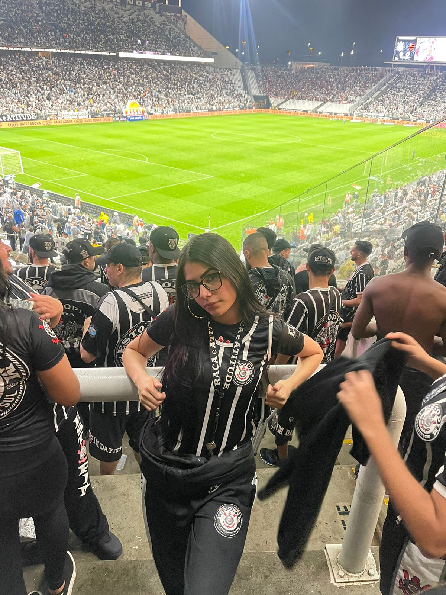

YASMIM RODRIGUES.
Me chamo Yasmim tenho 19anos e estou finalizando o 3° ano do ensino médio no Senac, gosto muito de novas experiências e estou sempre à procura de novos conhecimento, algumas coisas me atraem mais do que outras como por exemplo a área que pretendo atuar futuramente. adoro a área da tecnologia da informação e desejo fazer o ensino superior no próximo ano.


MEUS HOBBIES.
Bom, não é segredo pra ninguém que sou corinthiana, como meus hobbies preferidos estão ir ao Estádios com minha família e assistir jogos com meus amigos.